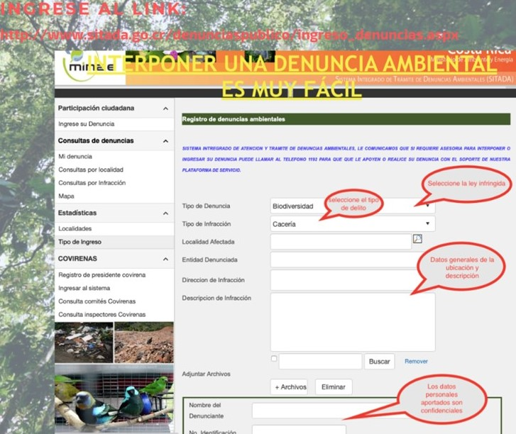

¿Cómo poner una denuncia ambiental?
A través de la plataforma SITADA cualquier cuidadano puede interponer una denuncia ambiental y posteriormente darle seguimiento; para eso debe ingresar a la página oficial de SITADA
Guía para presentar una denuncia ambiental
|
| |  |